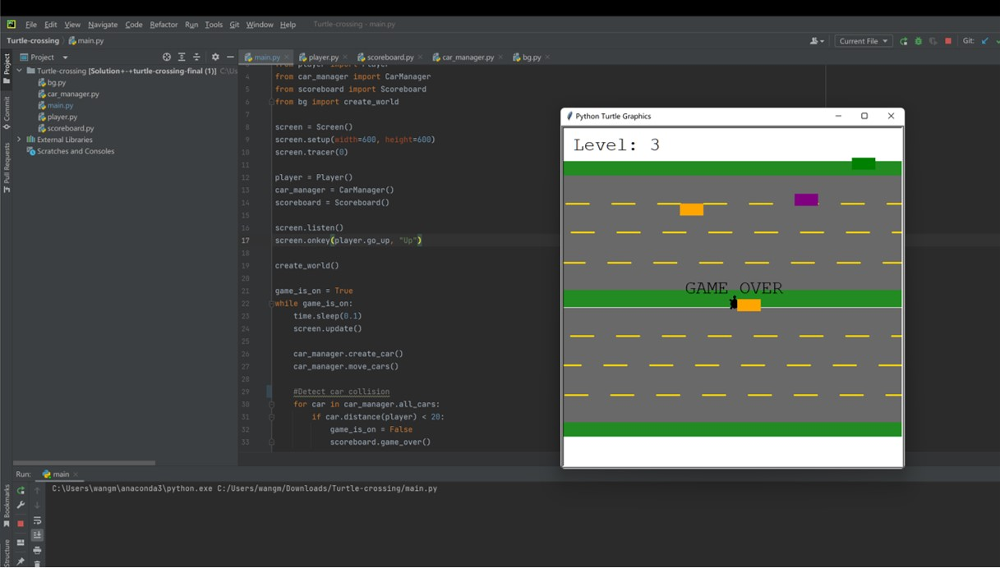

Turtle Crossing
Completed by Python

An interesting turtle crossing the road game. The player controls the turtle which can only go forwards, the goal is to avoid hitting by a bunch of randomly generated cars and reach the other side of the screen. When the level goes up, the cars speed up.